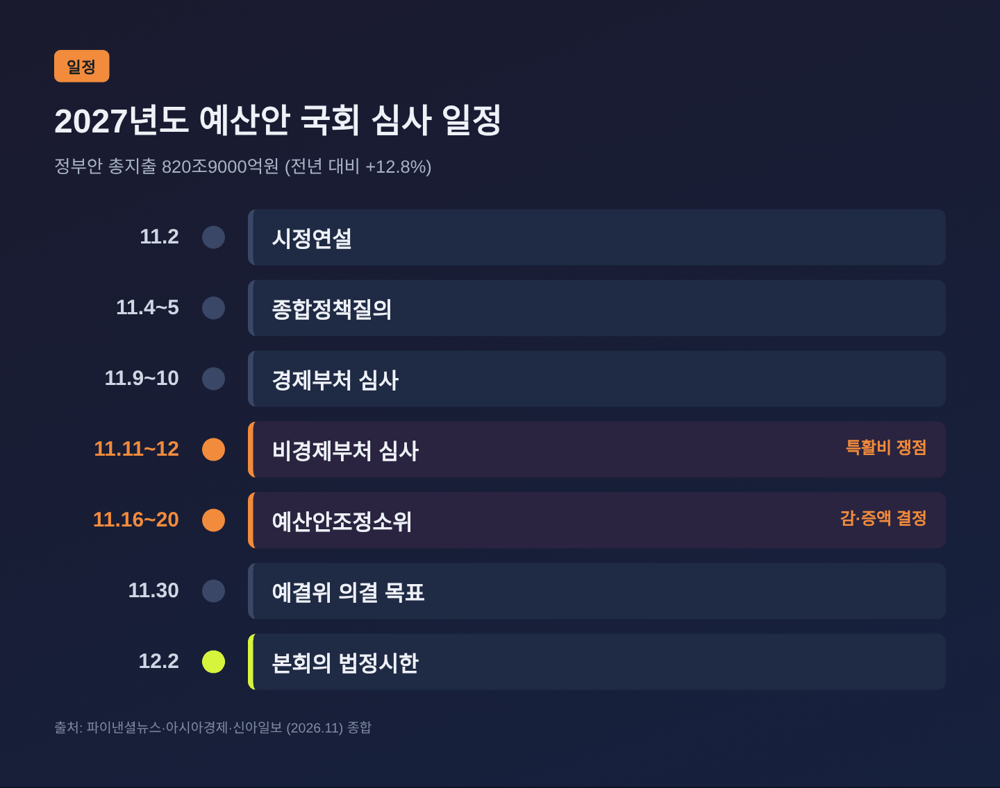
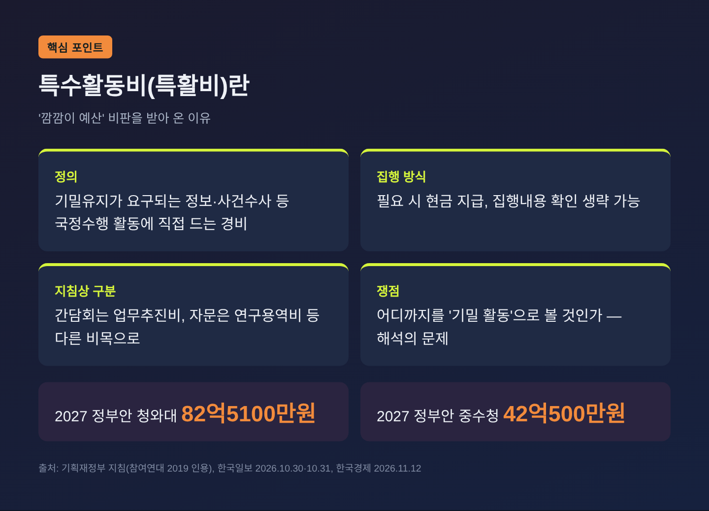
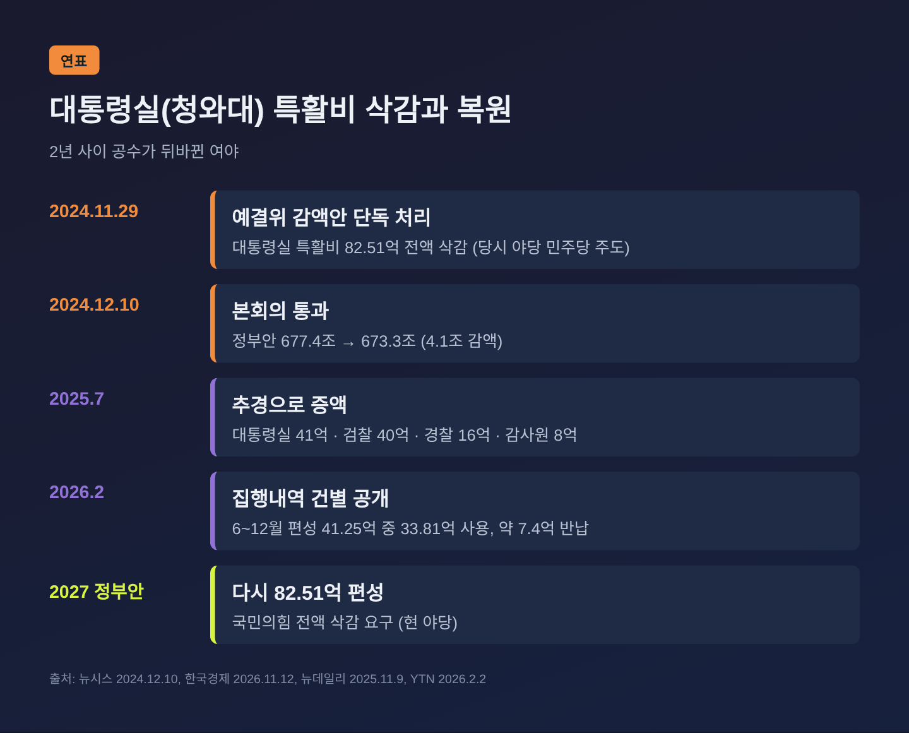
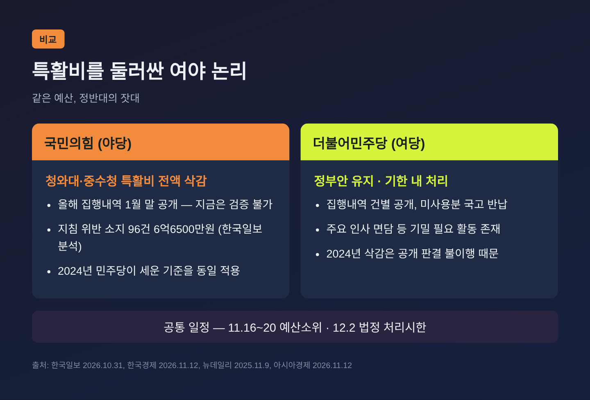
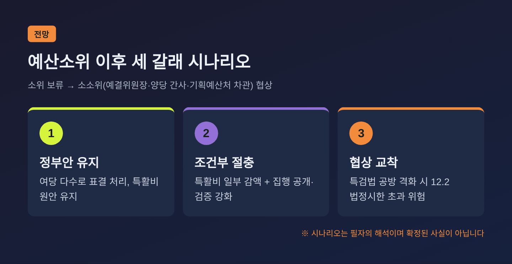

청와대 특활비 82억·중수청 42억, 예산소위 앞두고 여야가 맞붙는 이유
이번 글에서는 2027년도 예산안 국회 심사에서 가장 날 선 쟁점이 된 특수활동비(특활비) 문제를 정리해 보겠습니다. 결론부터 말씀드리면, 청와대 82억5100만원과 중대범죄수사청(중수청) 42억500만원의 특활비를 두고 여야의 공수가 2년 전과 정확히 뒤바뀌었습니다. 16일부터 감액·증액을 실제로 결정하는 예산안조정소위원회가 열리고, 법정 처리시한은 12월 2일입니다.
3줄 요약
- 정부 예산안 820조9000억원, 국회 예결위가 11~12일 비경제부처 심사를 마치고 16일부터 소위 심사에 들어갑니다.
- 국민의힘은 청와대·중수청 특활비 전액 삭감을 포함해 27조원 이상 감액을, 민주당은 정부안 유지와 기한 내 처리를 내걸었습니다.
- 2024년엔 민주당이 대통령실 특활비를 전액 삭감했고, 지금은 국민의힘이 같은 논리로 삭감을 요구하는 구도입니다.
■ 무슨 일이 있었나 — 부처별 심사 마무리, 공은 소위로
국회 예산결산특별위원회는 11일과 12일 이틀간 비경제부처 예산안을 심사했습니다. 첫날은 법무부·통일부·외교부·국방부·행정안전부·경찰청·중수청·인사혁신처가, 둘째 날은 대통령비서실·국가안보실·대통령경호처·감사원 등이 대상이었습니다. 앞서 9~10일 경제부처 심사까지 끝나면서 부처별 심사 일정은 모두 마무리됐습니다.
심사 대상인 2027년도 정부 예산안의 총지출은 820조9000억원입니다. 올해보다 12.8% 늘어난 역대 최대 규모로, 보도에서는 흔히 '821조'로 반올림해 부릅니다.
이제 무대는 예산안조정소위원회(예산소위)로 옮겨 갑니다. 16일부터 20일까지 사업별 감액·증액을 결정하는 자리입니다. 아시아경제 보도에 따르면 소위는 민주당 9명, 국민의힘 6명으로 꾸려졌고, 결론이 나지 않으면 예결위원장과 여야 간사, 기획예산처 차관이 참여하는 이른바 '소소위'로 협상이 넘어갑니다. 예결위 전체회의 의결 목표일은 30일, 본회의 법정 처리시한은 12월 2일입니다.

■ 왜 특활비가 이번 심사의 상징이 됐나
금액만 보면 특활비는 820조 예산에서 아주 작은 조각입니다. 청와대(대통령비서실·국가안보실) 특활비는 82억5100만원, 올해 출범한 중수청 특활비는 42억500만원입니다. 둘을 합쳐도 125억원 남짓입니다.
그런데도 쟁점이 된 이유는 이 돈의 성격에 있습니다. 기획재정부 지침은 특활비를 "기밀유지가 요구되는 정보 및 사건수사, 기타 이에 준하는 국정수행 활동에 직접 소요되는 경비"로 정의합니다. 필요하면 현금으로 지급할 수 있고, 집행내용 확인을 생략할 수 있도록 길을 열어 두었습니다. 시민단체 참여연대가 오래전부터 '깜깜이 예산'이라 불러 온 까닭입니다.
다만 '아무 증빙 없이 쓰는 돈'은 아닙니다. 한국일보 보도에 따르면 현행 지침은 특활비를 기밀 유지가 필요한 활동에만, 실제 수행자에게 지급하도록 정하고 있습니다. 현금으로 줄 때는 수령자 영수증과 집행내용확인서도 요구합니다. 간담회는 업무추진비로, 자문은 연구용역비로 처리하라는 구분도 있습니다. 결국 다툼은 "어디까지를 기밀 활동으로 볼 것인가"라는 해석의 영역에서 벌어집니다.

■ 2년 사이 뒤바뀐 공수 — 삭감과 복원의 전례
이 논쟁이 유독 뜨거운 데는 전례가 있기 때문입니다.
2024년 11월 29일, 당시 야당이던 민주당은 예결위에서 '감액 예산안'을 단독 처리했습니다. 대통령비서실·국가안보실 특활비 82억5100만원이 전액 삭감됐고, 검찰 특활비 80억900만원과 특정업무경비 506억9000만원, 감사원·경찰 특활비도 함께 깎였습니다. 사용처와 목적이 충분히 소명되지 않았다는 이유였습니다. 이 예산안은 12월 10일 본회의를 통과했고, 정부안 677.4조원은 673.3조원으로 줄었습니다.
예전엔 민주당이 삭감을 밀어붙였습니다. 지금은 국민의힘이 같은 칼을 들었습니다.
이재명 정부 출범 한 달 만인 2025년 7월 추경에서는 대통령실 41억원, 검찰 40억원, 경찰 16억원, 감사원 8억원의 특활비가 다시 늘었습니다. 당시 송언석 국민의힘 원내대표는 민생 추경이 급하다더니 대통령실 특활비가 그렇게 급했느냐는 취지로 비판했습니다. 반면 민주당 조승래 의원은 고도의 보안이 요구되는 활동 경비로, 원활한 국정운영을 위해 증액이 필요하다는 입장을 냈습니다.
그리고 2027년도 정부안에는 2년 전 전액 삭감됐던 것과 같은 액수, 82억5100만원이 다시 올라왔습니다.

■ 국민의힘의 논리 — "민주당이 세운 기준을 그대로"
국민의힘은 청와대와 중수청 특활비를 포함한 '100대 문제 사업'에서 27조원 이상을 깎겠다는 방침입니다. 임이자 정책위의장은 3일 "최소 30조"를 언급했고, 내부 문건에는 미래대응기금 여유자금까지 포함한 134조원대 감액 구상이 담겼다고 한국일보가 전했습니다. 수치가 제각각인 것은 기준이 달라서입니다. 개별 사업만 따지면 약 27조원(26.9조원) 규모로 보는 것이 정확합니다.
특활비 삭감 논리는 크게 세 갈래입니다.
첫째, 검증 시점 문제입니다. 청와대가 올해 집행내역을 내년 1월 말에 일괄 공개하겠다고 한 만큼, 지금은 사용처를 확인할 수 없어 내년 예산을 인정하기 어렵다는 주장입니다.
둘째, 집행 적정성입니다. 한국일보는 청와대가 공개한 지난해 9~12월 집행내역 1526건을 지침과 대조해, 전문가 자문·위로금 등 지침 위반 소지가 있는 96건 6억6500만원을 짚었습니다. 국회 결산심사소위에서도 같은 지적이 나왔지만, 청와대는 "이미 지침에 따라 이행하고 있다"며 시정요구를 받아들이지 않았습니다.
셋째, 같은 잣대론입니다. 한국경제 보도에 따르면 강명구 의원은 검찰 특활비의 불투명한 집행을 문제 삼았던 기준을 중수청에도 똑같이 적용하라는 서면 의견을 냈습니다. 박상웅 의원은 민주당이 과거 특활비 없이 업무추진비와 특정업무경비만으로도 수사가 가능하다고 했던 만큼 같은 기준을 적용하라고 요구했습니다.
■ 민주당의 논리 — "공개 조건이 달라졌다"
민주당의 반박도 간단치 않습니다.
먼저 특활비 자체에 반대한 적은 없다는 입장입니다. 2024년 삭감은 집행내역 공개를 요구한 법원 판결을 윤석열 정부가 따르지 않았기 때문이었고, 현 정부는 사용 내역을 공개하고 증빙되는 경우에만 지급하는 쪽으로 조건을 바꿨다는 설명입니다.
실제로 청와대는 올해 2월, 2025년 6~12월 특활비 집행 내역을 건별로 공개했습니다. YTN 보도에 따르면 편성액 41억2500여만원 중 33억8100만원을 썼고, 남은 약 7억4000만원은 국고에 반납했습니다. 건별 내역까지 공개한 국가기관은 청와대가 유일하다는 것이 당시 보도의 평가입니다.
집행 적정성 지적에 대해서도 민주당은 대통령비서실의 주요 인사 면담이나 의견 청취에는 기밀 유지가 필요한 경우가 있다고 맞섭니다. 활동의 명칭이 아니라 실제 목적과 기밀 필요성으로 판단해야 한다는 것입니다.
한병도 원내대표는 12월 2일 법정기한 준수를 거듭 강조하며, 야당이 "안으론 무제한 토론, 밖으론 장외투쟁에 몰두하며 예산심사를 가로막고 있다"고 비판했습니다.

■ 심사 바깥의 변수 — 보이콧과 엇박자
예산 심사는 숫자만의 싸움이 아닙니다.
국민의힘 법제사법위원회 소속 의원들은 여권 주도의 조작기소 특검법 처리에 반발해 예산 심사를 포함한 법사위 일정 보이콧을 선언한 상태입니다. 법무부와 중수청 예산이 걸린 상임위 단계부터 삐걱댄 셈입니다.
야당 내부의 엇박자도 드러났습니다. 국민의힘이 미래대응기금 전액 삭감을 주장하는 와중에 일부 의원이 기금 편성 사업의 증액 의견을 낸 사실이 알려졌고, 정점식 원내대표는 13일 상임위별 관련 증액 신청을 모두 철회하라고 지시한 것으로 전해졌습니다. 민주당 이용우 대변인은 14일 "예산 심사가 장난인가"라며 공세에 나섰습니다. 양측 모두 상대의 '이중 잣대'를 겨누는 모양새입니다.
■ 앞으로의 전망 — 소위 5일, 그다음은 소소위
16일부터 닷새간 이어지는 예산소위가 첫 분수령입니다. 특활비처럼 여야 입장이 정면으로 갈리는 항목은 소위에서 '보류'로 넘겨지는 경우가 많습니다. 그렇게 되면 공은 예결위원장과 양당 간사, 기획예산처 차관이 마주 앉는 소소위로 넘어갑니다.
여기서부터는 필자의 해석입니다. 예산소위 구성(민주당 9명, 국민의힘 6명)만 보면 여당이 수적으로 앞서 있어, 표결로 정부안을 지키는 길도 열려 있습니다. 그러나 2024년 감액 예산안 단독 처리가 남긴 정치적 부담을 감안하면, 특활비 일부 감액과 집행 공개 강화 같은 조건부 절충이 협상 카드로 오를 가능성도 배제할 수 없습니다. 반대로 특검법 공방이 격해지면 예산 협상 자체가 멈춰 12월 2일 시한을 넘길 위험도 있습니다.

정리하면 이렇습니다. 특활비 논쟁의 핵심은 액수가 아니라 기준입니다. 2024년의 기준과 2026년의 기준이 같은지, 그 물음에 여야 모두 답해야 하는 국면입니다.
"특활비는 얼마냐보다, 어떻게 쓰고 어떻게 보여주느냐의 문제입니다."
누가 옳으냐고 물으신다면, 저는 16일 소위에서 각자가 내놓는 공개·검증 방안을 보고 판단하시길 권하겠습니다.
참고 출처 - 파이낸셜뉴스(뉴시스), 국회 예결위 비경제부처 심사…靑·중수청 특활비 쟁점 (2026-11-11) https://www.fnnews.com/news/202611110501297293 - 파이낸셜뉴스(뉴스1), 예산안 심사 본격화…野 "최소 30조 삭감" (2026-11-03) https://www.fnnews.com/news/202611030529570686 - 한국일보, 靑 특활비·미래대응기금 벼르는 국힘 (2026-10-30) https://www.hankookilbo.com/news/article/A2026102916030004023 - 한국일보, 靑 '특활비 지침 위반' 지적에도 더 썼다 (2026-10-31) https://www.hankookilbo.com/news/article/A2026103015300004285 - 한국경제, 특활비 놓고 공수 뒤바뀐 여야 (2026-11-12) https://www.hankyung.com/article/2026111236051 - 아시아경제, 예결위 이틀째 비경제부처 예산심사…내주 예산소위 가동 (2026-11-12) https://view.asiae.co.kr/article/2026111210272702643 - 신아일보, 예결위 비경제부처 예산 심사 마무리 (2026-11-12) https://www.shinailbo.co.kr/news/articleView.html?idxno=5082490 - 신아일보, 與, 미래대응기금 삭감 요구 국힘에 "뒤로는 증액 요구" (2026-11-14) https://www.shinailbo.co.kr/news/articleView.html?idxno=5083255 - 뉴데일리, 靑 내년 예산 1265억 원 책정 (2026-10-19) https://www.newdaily.co.kr/site/data/html/2026/10/19/2026101900070.html - 뉴시스, 초유의 '4.1조 감액' 예산안 본회의 통과 (2024-12-10) https://www.newsis.com/view/NISX20241210_0002991740 - 세계일보, 2025년 추경 대통령실 특활비 증액 논란 (2025-07-03) https://www.segye.com/newsView/20250703505727 - YTN, 청와대 지난해 특활비·업무추진비 공개 (2026-02-02) https://www.ytn.co.kr/_ln/0101_202602021903287623 - 참여연대, 특수활동비 정보공개 관련 자료 (2019-08-08) https://peoplepower21.org/government/1648108
#특활비 #특수활동비 #2027년예산안 #예결위 #예산소위 #청와대특활비 #중수청 #법정처리시한